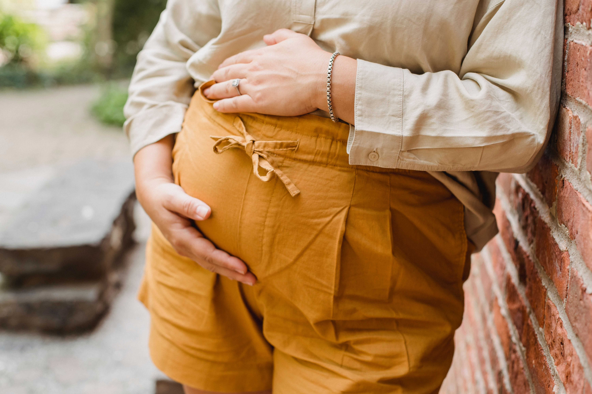

La grossesse entraîne de nombreux changements dans le corps :
modification de la posture, évolution de la mobilité du bassin,
augmentation progressive du volume abdominal et nouvelles
contraintes sur le dos et les articulations.
Ces changements peuvent parfois s’accompagner de douleurs ou de
gênes fonctionnelles. Dans certaines situations, une consultation
d’ostéopathie peut être envisagée pendant la grossesse afin de faire
le point sur la mobilité et les zones de tension, en complément du
suivi médical.

À retenir : l’ostéopathie peut être envisagée
pendant la grossesse dans certaines situations, mais elle ne
remplace jamais le suivi médical ou obstétrical. En présence d’un
symptôme inhabituel, important ou inquiétant, un avis médical doit
être privilégié.
Pourquoi le corps change-t-il pendant la grossesse ?
Au fil des mois, le corps s’adapte progressivement au développement
du bébé. Le ventre augmente de volume, le centre de gravité évolue
et la posture peut se modifier.
Ces adaptations peuvent modifier la manière de marcher, de se tenir
debout ou de s’asseoir. Elles peuvent également entraîner une
sollicitation différente de certaines zones du dos, du bassin et des
membres inférieurs.
Chaque grossesse étant différente, les sensations ressenties peuvent
varier considérablement d’une femme à l’autre.
Quand consulter un ostéopathe pendant la grossesse ?
Une consultation d’ostéopathie peut être envisagée lorsqu’une gêne
apparaît ou lorsque certains changements liés à la grossesse
deviennent inconfortables au quotidien.
Parmi les motifs fréquemment rencontrés, on peut notamment retrouver
:
des douleurs ou tensions au niveau du dos ;
des gênes au niveau du bassin ;
des tensions cervicales ou dorsales ;
certaines douleurs ou gênes liées aux changements de posture ;
des difficultés de mobilité dans certaines activités du quotidien
;
une sensation de raideur ou d’inconfort lors de certains
mouvements.
Une consultation peut également être envisagée lorsque la future
maman souhaite faire le point sur sa mobilité au cours de la
grossesse.
Ostéopathie et grossesse : les douleurs du dos et du bassin
Les douleurs lombaires et les gênes au niveau du bassin sont
fréquentes pendant la grossesse. Elles peuvent notamment être
influencées par les changements de posture, la modification de la
répartition des charges et l’évolution de la mobilité.
Une consultation d’ostéopathie peut permettre d’évaluer la mobilité
de différentes régions du corps et de rechercher les éventuelles
zones de tension ou de restriction de mouvement.
La prise en charge est adaptée au stade de la grossesse et au
contexte de chaque patiente.
À quel moment de la grossesse consulter un ostéopathe ?
Il n’existe pas un moment unique où toutes les femmes enceintes
devraient consulter un ostéopathe. L’intérêt d’une consultation
dépend notamment des symptômes ressentis, du stade de la grossesse
et du contexte médical.
Au début de la grossesse
Le premier trimestre correspond à une période importante de
changements. Une consultation peut être envisagée lorsqu’une gêne
musculosquelettique apparaît, sous réserve que la situation médicale
permette cette prise en charge.
Au deuxième trimestre
À mesure que le ventre se développe, la posture et les habitudes de
mouvement peuvent évoluer. Certaines femmes ressentent alors
davantage de tensions au niveau du dos, du bassin ou d’autres zones
du corps.
Au troisième trimestre
En fin de grossesse, l’augmentation du volume abdominal et les
changements posturaux peuvent rendre certaines positions ou certains
mouvements moins confortables.
Une consultation peut alors avoir pour objectif d’évaluer la
mobilité et d’accompagner certaines gênes fonctionnelles, toujours
en complément du suivi de la grossesse.
Comment se déroule une séance d’ostéopathie enceinte ?
Une consultation commence généralement par un échange permettant de
connaître le motif de consultation, le contexte de la grossesse et
les éventuels antécédents.
L’ostéopathe réalise ensuite un bilan adapté afin d’évaluer la
mobilité des différentes zones du corps concernées par la gêne.
Pendant la grossesse, les techniques utilisées doivent être adaptées
à la situation de la patiente et au stade de la grossesse.
L’objectif n’est pas de traiter la grossesse elle-même, mais
d’accompagner certaines gênes fonctionnelles lorsque cela est
approprié.
Quelles précautions prendre avant une consultation ?
Une grossesse nécessite un suivi médical régulier. L’ostéopathie
intervient éventuellement en complément de ce suivi.
Avant une consultation, il est important de signaler à l’ostéopathe
que vous êtes enceinte, de préciser le stade de la grossesse et de
lui communiquer les informations médicales utiles à la prise en
charge.
En cas de doute sur la possibilité de consulter, notamment en
présence d’une grossesse présentant une situation médicale
particulière, il est préférable de demander conseil au professionnel
de santé qui suit la grossesse.
Quand faut-il consulter rapidement un professionnel de santé ?
Une douleur pendant la grossesse ne doit pas systématiquement être
attribuée à une origine mécanique ou posturale.
En présence d’une douleur importante, brutale ou inhabituelle, ou
lorsque d’autres symptômes inquiétants apparaissent, il est
nécessaire de demander un avis médical ou de contacter le service
d’urgence adapté à la situation.
L’ostéopathie ne doit pas retarder une consultation médicale lorsque
celle-ci est nécessaire.
Quel peut être le rôle de l’ostéopathie pendant la grossesse ?
L’ostéopathie peut avoir pour objectif d’évaluer la mobilité de
différentes régions du corps et d’accompagner certaines gênes
fonctionnelles rencontrées pendant la grossesse.
La consultation est individualisée en fonction du stade de la
grossesse, du motif de consultation et du contexte de chaque
patiente.
L’ostéopathie ne remplace pas le suivi assuré par le médecin, la
sage-femme ou l’équipe obstétricale. Elle peut éventuellement
s’inscrire dans une prise en charge complémentaire lorsque cela est
approprié.
À Bruges, Henrique Nunes propose des consultations d’ostéopathie
pour les femmes enceintes sur rendez-vous.
Questions fréquentes sur l’ostéopathie et la grossesse
Peut-on consulter un ostéopathe pendant la grossesse ?
Une femme enceinte peut consulter un ostéopathe lorsque son état de
santé le permet et qu’aucune contre-indication médicale n’a été
identifiée. La prise en charge doit être adaptée au stade de la
grossesse et réalisée avec des techniques appropriées.
À quel moment de la grossesse peut-on consulter un ostéopathe ?
Une consultation peut être envisagée à différents moments de la
grossesse selon les besoins et les gênes ressenties. Le moment
dépend notamment du contexte de la grossesse, des symptômes et de
l’avis des professionnels de santé qui assurent son suivi.
Pourquoi consulter un ostéopathe enceinte ?
Les changements liés à la grossesse peuvent modifier la posture et
la mobilité. Une consultation peut permettre de faire le point sur
certaines gênes fonctionnelles et d’évaluer la mobilité des zones
concernées.
Peut-on consulter pour un mal de dos pendant la grossesse ?
Une douleur du dos peut constituer un motif de consultation, mais
elle doit être appréciée en fonction du contexte. En cas de douleur
importante, brutale, persistante ou accompagnée de symptômes
inhabituels, un avis médical est nécessaire.
L’ostéopathie remplace-t-elle le suivi médical de la grossesse ?
Non. L’ostéopathie ne remplace pas le suivi médical, gynécologique
ou obstétrical de la grossesse. Elle peut éventuellement intervenir
en complément lorsque cela est approprié.